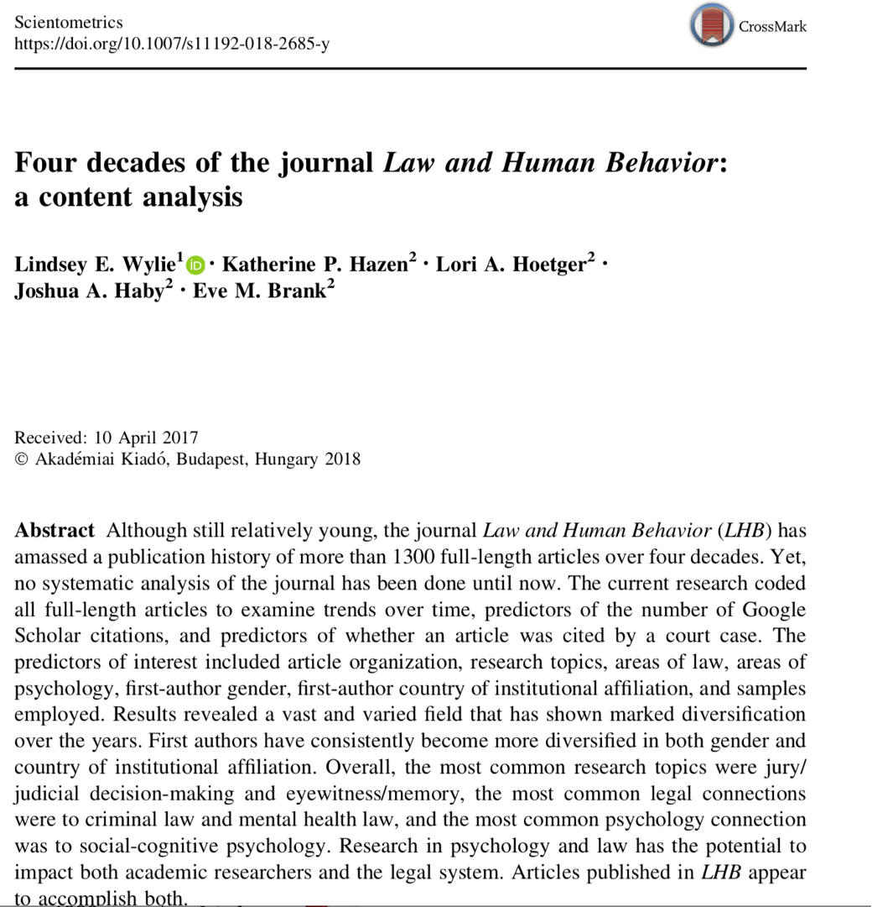
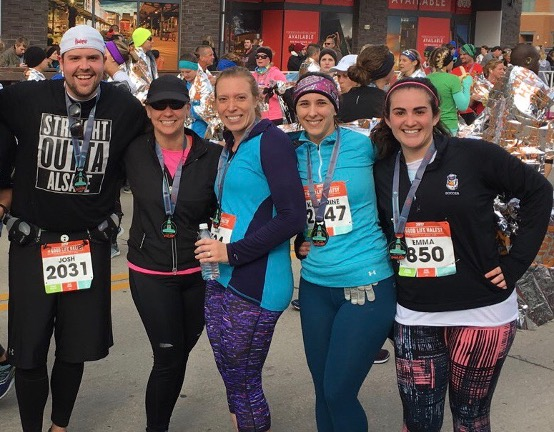
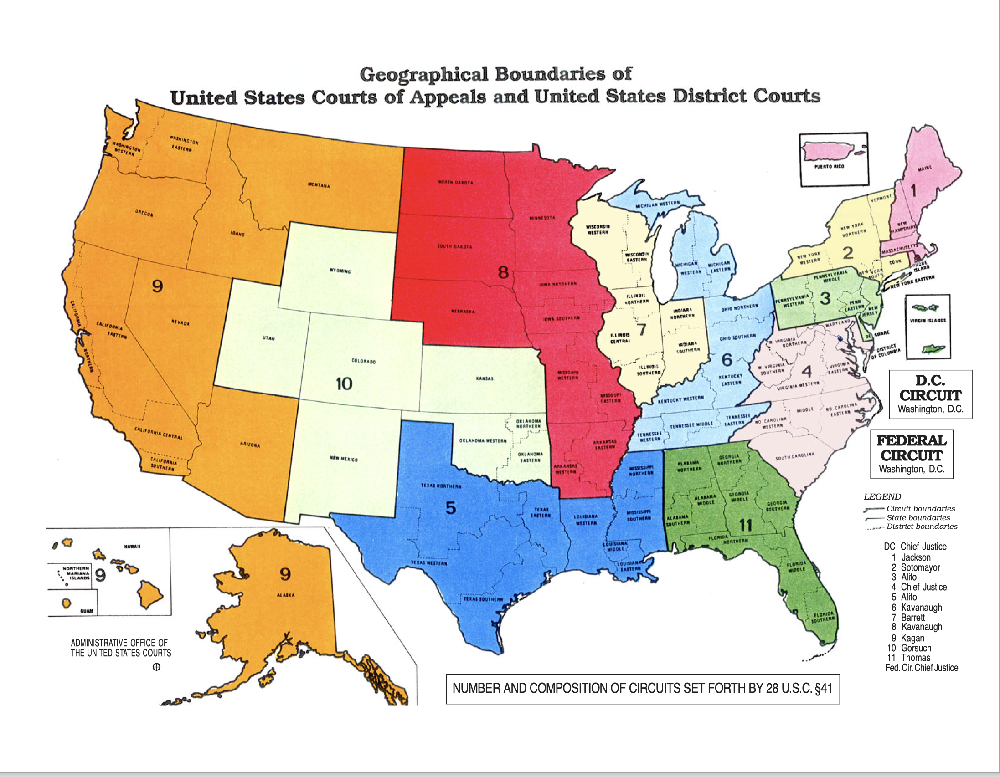
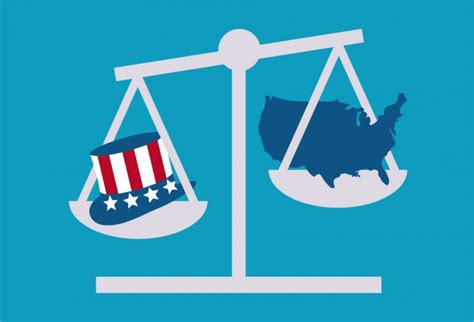
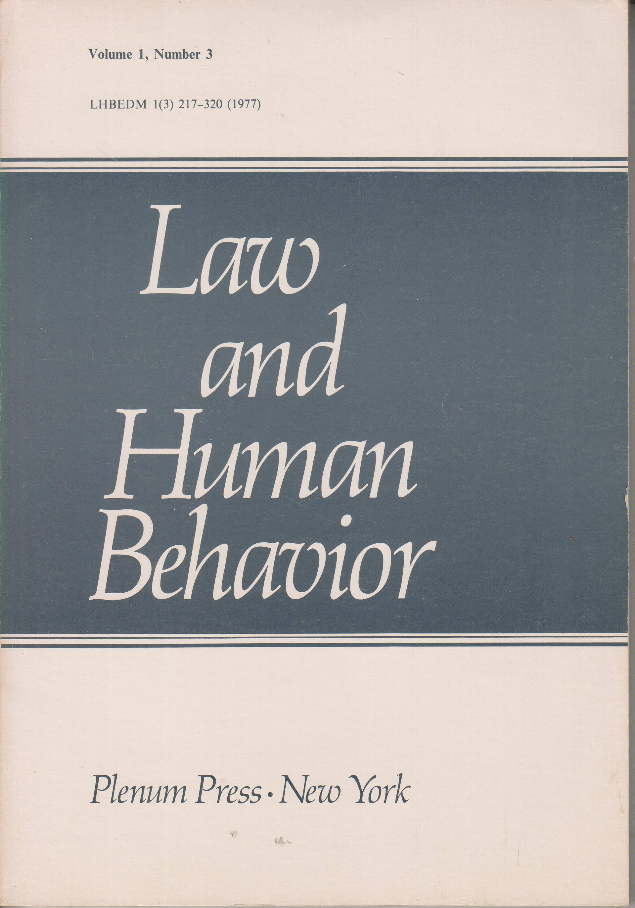
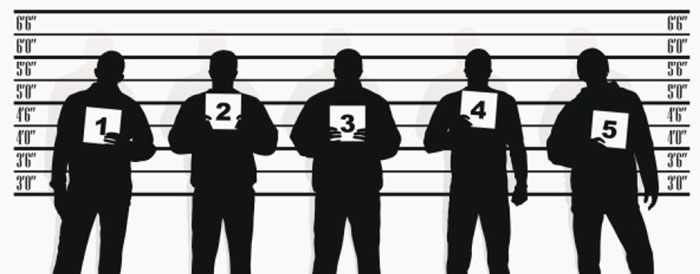
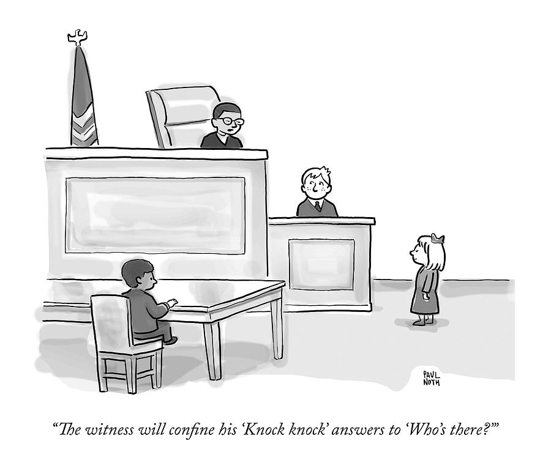
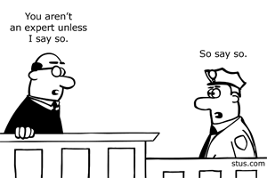
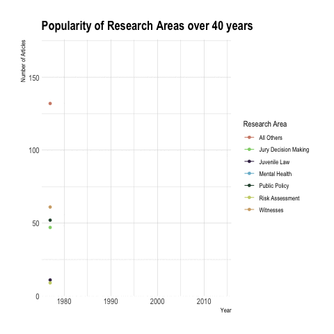
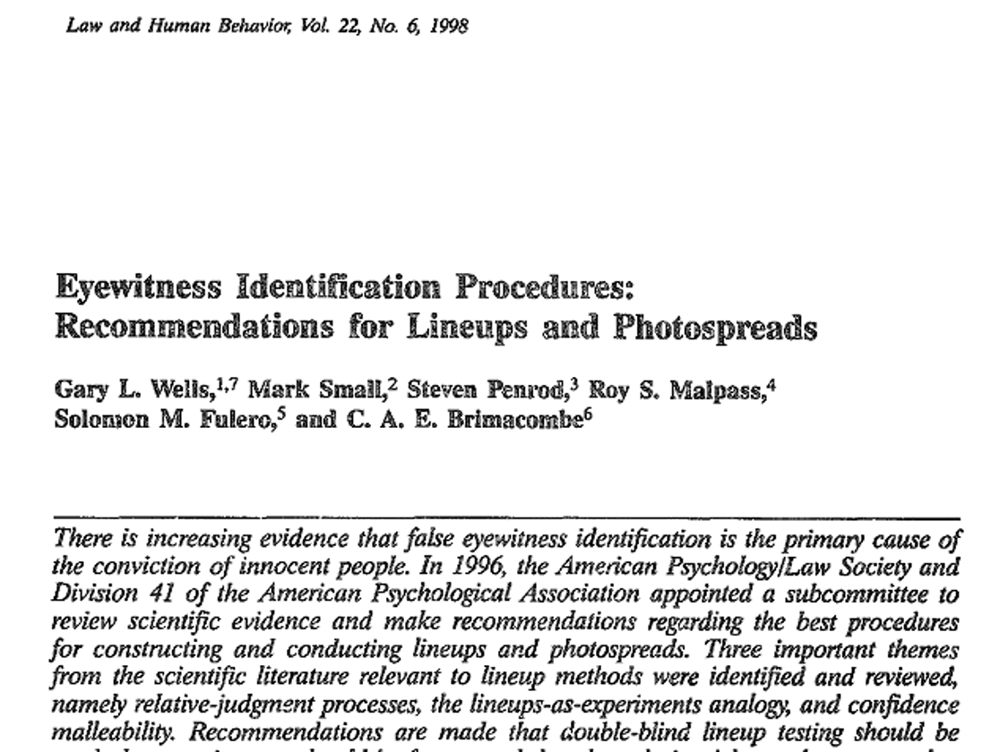

Law-Psychology Research in the U.S
Emma Marshall, JD, MA
Today’s Class


Previous Research Reviews
- Selective reviews - narrow focus
Moore & Finn (1986)
Experimental forensic psychologyDevine et al (2000)
Jury decision makingMeissner & Brigham (2001)
Cross race effect
Scientific Review Papers
- Approved by AP-LS committee
Wells et al (1998)
Eyewitness Identification Procedures: Recommendations for lineups and PhotospreadsKassin et al (2010)
Police-induced Confessions: Risk Factors and RecommendationsConstanzo & Levett (2020)
Policy and Procedure Recommendations for the Collection and Preservation of Eyewitness Identification Evidence
Sources of Law
Civil Law
Criminal Law
Law in the U.S.

State vs Federal Law



Fourty Years of Law & Human Behavior

- Official journal of APLS
- Peer reviewed
- Multidisciplinary forum
- Range of articles:
- original research
- reviews
- theory papers
Journal Impact
| Journals | 2017 | 2022 |
|---|---|---|
| Behavioral and Brain Sciences | 23.55 | 21.36 |
| Psychological Bulletin | 14.46 | 23.03 |
| American Psychologist | 9.73 | 16.36 |
| Harvard Law Review | 3.94 | 6.03 |
| Law and Human Behavior | 2.16 | 3.87 |
| Psych, Public Policy & Law | 1.93 | 3.32 |
| Applied Cognitive Psychology | 1.67 | 2.36 |
| Behavioral Sciences & the Law | .96 | 2.57 |
| Law and Society Review | 1.73 | 2.59 |
| Legal & Criminological Psych | 1.65 | 1.76 |
| Psychology, Crime and Law | .69 | 1.75 |
| Law and Social Inquiry | 1.14 | 1.40 |
Method
- Comprehensive review
- Four research assistants
Overlapped on n = 25%On average, each coded 450 articles (range: 447-455)
- N = 1320 articles from 1977-2014 (vol. 38, issue 3)
Removed non-research items
Coded Variables
| General Information |
|---|
| Research topic(s) |
| Citations (#) |
Coded Variables
| Research Method |
|---|
| Sample |
| Specific research method |
Coded Variables
| Connection to Law |
|---|
| Area of law |
| Reference to case law |
| Reference to statute(s) |
| Reference to state or federal constitutional amendments |
| Reference to specific policy |
Coded Variables
| Connection to Psychology |
|---|
| Area of psychology |
| Application of psychological theory |
Primary Research Areas

“all other” research areas

Types of “Witnesses”
 Eyewitness Memory ~ 12%
Types of “Witnesses”
Child Witnesses ~4% 
Expert Witnesses ~4% 
Research Areas Over Time
Research Areas Over Time

Research Over Time: Witnesses

Research Areas Over Time: Risk Assessment

Research Areas Over Time: Mental health

Research Areas Over Time: Public Policy

Research Areas Over Time: Juvenile Law

Research Areas Over Time: Jury decision-making

Eyewitness > Juries

Research Areas Over Time
Most Citations
Most Citations
Risk Assessment
Hanson & Thornton (2000)
Eyewitness memory
Wells et al (1998) 
20 Most Cited Papers
| Author(s) (year) | Article title | Research topic(s) | 2017 | 2022 |
|---|---|---|---|---|
| Hanson and Thornton (2000) | Improving risk assessments for sex offenders: a comparison of three actuarial scales | Risk assessment; sex offenders | 994 | 1578 |
| Wells et al. (1998) | Eyewitness identification procedures: Recommendations for lineups and photospreads | Eyewitnesses and memory | 883 | 1346 |
| Bornstein (1999) | The ecological validity of jury simulations: Is the jury still out? | Jury or judicial decision making | 694 | 1059 |
| Rice et al. (1992) | An evaluation of a maximum security therapeutic community for psychopaths and other mentally disordered offenders | Psychopathy; mentally ill offenders and psych. Patients | 627 | 951 |
| Steinberg and Cauffman (1996) | Maturity of judgment in adolescence: Psychosocial factors in adolescent decision making | Competency and criminal responsibility; juvenile justice | 570 | 1010 |
| Harris et al. (1991) | Psychopathy and violent recidivism | Psychopathy; criminal offending/recidivism | 547 | 850 |
| Loftus et al. (1987) | Some facts about ‘’weapon focus’’ | Eyewitnesses and memory | 518 | 885 |
| Grisso and Appelbaum (1995) | The MacArthur Treatment Competence Study. III—Abilities of Patients to consent to psychiatric and medical treatments | Competency and criminal responsibility | 493 | 643 |
| Rice and Harris (1997) | Cross-validation and extension of the Violence Risk Appraisal Guide for child molesters and rapists | Risk assessment; sex offenders | 463 | 662 |
| Rice and Harris (2005) | Comparing effect sizes in follow-up studies: ROC area, Cohen’s d, and r | General psych and law | 458 | 1672 |
| Grisso et al. (2003) | Juveniles’ competence to stand trial: A comparison of adolescents’ and adults’ capacities as trial defendants | Juvenile justice; competency and criminal responsibility | 443 | 810 |
| Goodman and Reed (1986) | Age differences in eyewitness testimony | Eyewitnesses and memory | 437 | 635 |
| Slovic et al. (2000) | Violence risk assessment and risk communication: The effects of using actual cases, providing instruction, and employing probability versus frequency formats | Risk assessment | 435 | 702 |
| Kassin et al. (2010) | Police-induced confessions: Risk factors and recommendations | Confessions and interrogations | 425 | 1017 |
| Appelbaum and Grisso (1995) | The MacArthur Treatment Competence Study. I—Mental Illness and competence to consent to treatment | Competency and criminal responsibility | 424 | 618 |
| Leistico et al. (2008) | A large-scale meta-analysis relating the hare measures of psychopathy to antisocial conduct | Risk assessment; psychopathy | 424 | 930 |
| Seagrave and Grisso (2002) | Adolescent development and the measurement of juvenile psychopathy | Psychopathy; juvenile justice | 419 | 676 |
| Steblay (1992) | A meta-analytic review of the weapon focus effect | Eyewitnesses and memory | 406 | 656 |
| Deffenbacher et al. (2004) | A meta-analytic review of the effects of high stress on eyewitness memory | Eyewitnesses and memory | 402 | 749 |
| Baker and Emery (1993) | When every relationship is above average— Perceptions and expectations of divorce at the time of marriage | Family issues | 390 | 552 |
Sample

Specific Type of Study

Area of Law

Reference to Legal Doctrine

Area of Psychology

Did article apply psychological theory?

Application of Psychological Theory

:::
Summary
- Most articles focused on similar topics
- Few professional samples
- Mostly criminal law
- Limited to social or cognitive psychology
- Room for growth!